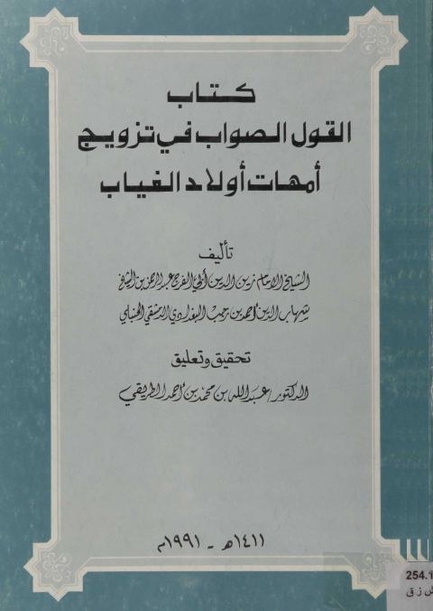

Downloads need an internet connection.
القول الصواب في تزويج أمهات أولاد الغياب
Authors: ابن رجب الحنبلي
Editors: عبد الله بن محمد الطريقي
**▫️ العنوان: القول الصواب في تزويج أمهات أولاد الغياب** ▪️ المؤلف: #أبو_الفرج_عبد_الرحمن_بن_شهاب_الدين_أحمد_بن_رجب_البغدادي_الدمشقي_الحنبلي ▫️ المحقق: #عبد_الله_بن_محمد_الطريقي ▪️ تاريخ النشر: 1411 -1991 ▫️ بلد النشر: الرياض، #السعودية ▪️ الطبعة: 1 ▫️ عدد الأجزاء: 1 ▪️ الصفحات: 91 ▫️ نوع الوعاء: #كتاب ▪️ التصنيف الرئيسي: #المرأة_والمجتمع ▫️ التصنيف الفرعي: #أحوال_شخصية ۪